Luz
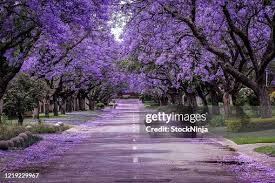Es curioso como el destino encuentra su camino, como una pequeña luciérnaga que vuela en la soledad de la noche, entre cientos de árboles, sin parecer tener un lugar al cual llegar, es solo una pequeña lucesita que se desvanece en la enormidad del horizonte, es un suspiro, un beso, un té amo, algo tan pequeño que pudo haber quedado perdido en el pasado, pero de alguna manera milagrosa, como por arte de magia, llego a su destino, como por arte de magia su luz no se perdió en el vacío, como por arte de magia su luz lleno mi corazón, brilla pequeña lucesita veamos si puedes encender ese amor una vez más, veamos si esta vez tu luz brilla con más intensidad.
Autor I.V
luna
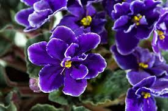Un día te perdí, mil noche pásate en quien sabe que lugar, mil noches no supe de tu existencia, no te mentiré, con el paso de los días te olvide, solo te convertiste en un recuerdo fugaz, una pequeña mueca de de felicidad en mis labios, una lagrima , una imagen que se colaba por el rabillo de mi ojo, no te vi por tanto tiempo y casi deje de pensar en ti, casi, deje de mirar la luna que compartíamos, deje de preguntarle si estabas bien, deje de pedirle que te cuidara por mi, me olvide de ti o eso creí, pues un día la luna te trajo de vuelta, y supe que tu aun la mirabas pensado en mi, preguntándole donde estaba, pidiéndole que me cuidara, pidiéndole que algún día regresara a ti.
Autor I.V
Veneno
Llevo en el alma ira infinita, un fuego que me quema por dentro, recuerdos que devoran mi
mente, voces del pasado que claman venganza, llevo veneno en la sangre, llevo la marca de cain en
la frente, paria entre los hombres, demasiado salvaje para las bestias, mírame caminar entre los
monstruos, como una sombra que vaga por los oscuros bosque en las noches de invierno, como un
espíritu que a perdido su carne, como la sombra de la muerte que trae consigo la peste y el hambre.
Llevo veneno en la sangre, ha corroído mi cuerpo, enloquecido mi mente, se ha llevado la poca
humanidad que me quedaba, llevo veneno en la sangre por no poder soltar los recuerdos que me ataban a ti.
Autor I.V
Abismo
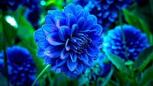Como puedo explicarte lo que he mirado en la oscuridad, el lugar frio y pútrido que visito a menudo, como puedo describirte los gritos, las voces que salen de ese lugar, como puedo explicarte el dolor, la angustia, la furia contenida ahí, como puedo mirarte a los ojos después de lo que he visto, como puedo tomar tu mano después de caminar solo por ese lugar, como puedo sentir algo si han desgarrado mi alma, si quebraron mis huesos, si cada rastro de esperanza, fue robado de mi cuerpo, como puedo seguir adelante si mis piernas están destrozadas, si estoy tan cansado, y lo único que alivia mi sufrimiento es el apegarme a tu recuerdo, esos pequeños recuerdos de lo que vivimos juntos, del suave toque de tus manos, el sabor de tus labios, lo profundo de tu mirada y ese brillo que habita en tus ojos, como puedo rendirme si anhelo estar contigo una vez mas.
Autor I.V
Tristeza

Casi no recuerdo esos días, ha pasado tanto tiempo, solo recuerdo un corazón rotó, lágrimas que eran cubiertas por la lluvia, solo recuerdo que dije que no pasaba nada, que estaba bien, te desee el mejor de los destinos, que fueras feliz, que amaras a manos llenas, que vivieras una vida grandiosa, mientras yo superaba tu perdida, puse mi cara de poker y afronte la vida, un día a la vez, remendé mi corazón, una puntada a la vez, si lo admito, hubo noches en que quise saber de ti, que no dormía pensando en ti, y aunque creí que estaría bien esa tristeza infinita no se iba nunca, nunca se fue, solo la comprimí en una pequeña cajita y la aventé al lugar más oscuro de mi corazón, no la he vuelto a ver, pero a veces en las noches solitarias creo que sigue ahí.
Autor I.V
Mito
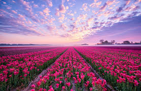Se dice que no venimos solos al mundo, se dice que nos humanos fuimos creados en pares, que en algún lugar del mundo una persona espera por ti, que un hilo rojo del destino te conecta con ella de alguna manera, que tarde o temprano la encontraras, que tarde o temprano esa persona vendrá a ti, que en algún lugar del universo esa persona siempre estará esperando por ti, que por un acto divino un día se encontraran el la calle, en una fiesta, en la entrada de un cine, que se yo, y que esa chispa que los une hará su magia, sus meradas se cruzaran y lo sabrás, por fin se encontraron, lo que estuviste buscando toda la vida y no sabias, esa persona que hará latir tu corazón como ninguna otra, que hará temblar tus manos el solo estar en su presencia, que erizara tu piel con un susurro en tu odio, se dice el día en que se encuentren llegara y entonces jamas podrán dejarse quizá sea así, quizá solo sea un mito.
Autor I.V
Memoria

no creo que lo entiendas, no lo olvide, nunca olvido nada, no se si es algún tipo de bendición o maldición, han pasado tantos años y aun veo las imágenes en mi mente como si hubiera sido ayer, como si nunca te hubieras ido, es como ver una película con los buenos momentos, los malos, todos esos pequeños instantes que pasamos juntos, se que ya lo has olvidado casi en su totalidad, pero yo te recordé todo este tiempo, y se que te recordare para la eternidad, se que recordare siempre tus ojos, tu sonrisa, el sonido de tu voz y el olor de tu pelo, lo que se sentía estar en tus brazos a que sabían tus besos, sabes no lo olvide aunque pasaron tantos años, y se que no habrá un momento en mi vida donde quedes en el olvido, así pasen cien años y la vejes haya hecho estragos con mi ser, todos esos momentos me acompañaran hasta el día en que no este aquí, tal vez me valla yo antes que mis recuerdos, tal vez me olvides tu antes de que deje de verte en mis recuerdos, antes de que deje de verte en mis sueños, se que no lo entiendes pero nunca te has ido y nuca te iras.
Autor I.V
Amor

Que nos queda si no la vieja sombra de lo que fuimos, recuerdos, heridas de una gran batalla, fuimos como un cometa que pasa una vez en la vida algo hermoso y fugaz, como puedo describir el amor que tengo por ti, cómo comparar los momentos que me diste, con que los compararía, con el sol? Con la luna? Cómo describir el universo de emociones que me hace sentir, como? Como te describo a ti, qué palabras podría usar que no se hayan usado antes, que puedo decir de ti cómo puedo explicar al mundo lo que siento al ver tus ojos, al escuchar tu voz, que digo sobre cómo el latido de mi corazón se desborda al sentir tus manos, que puedo decir acerca de cómo mi alma vuela al sentir tus besos, como apilo las palabras para que suenen de manera poética, para que conmuevan tu corazón, para que un montón de letras te den siquiera un pequeña pista de lo que tu me haces sentir, de lo que tu me haces vivir, de cómo cambias mi mundo, de la manera en que te convertiste en mi universo, la luz que guía mis pasos,esa pequeña llama que enciende mi corazón cada mañana que me da una razón para vivir.
Autor I.V
Inmortalidad
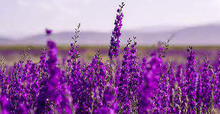Me asegure de ser inmortal, de vivir para siempre en tus recuerdos, logre ser inolvidable, no hice nada impresionante, solo camine a tu lado, tome tu mano y acaricie tu alma, no hice nada que no pudiera hacer otro hombre, simplemente te mostré una parte de mi que no suelo mostrar al mundo, esos ojos vidriosos, esa sonrisa tonta, la mirada intensa que trata de revelar tus secretos, no hice nada, solo te bese, te hice temblar de emoción, te hice reír como una niña, no hice nada, solo reviví tu alma, te hice soñar una vez mas, te hice querer ver el futuro, no hice nada, solo me grabe en tu corazón de una forma en la que jamás podrás borrarme, si ahora puedo verte, en tus años de vejez mirando tus recuerdos con nostalgia, recordando quien fui y que signifique para ti, si ahora soy inmortal, viviré en ti para siempre, viviré contigo hasta que mueras o me olvides.
Autor I.V
Morir
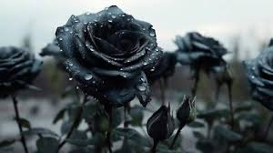Siempre en la vida me lance al abismo sin miedo, no sabiendo que hacer, sin tener un carajo, sin saber que esperar, siempre en la vida mire la muerte como mi única escapatoria y la vida como unas pesadas cadenas qué tenía que cargar, no espere nada, no anhele nada, ame un par de veces, entregue mi alma unas cuantas más, siempre regrese echo añicos, siempre deseando, que esto terminara, no, no pedí nada, no construí nada, una vida mediocre en todos sus sentidos, perdí el tiempo tratando de escapar de mi mente, corrí, me escondí, pero siempre estaba ahí, esa voz que me tortura, tal vez era la soledad la razón por la que solo podía escuchar esa voz, por años, no importaba donde ni si tenía compañía o no, siempre era esa voz, nunca me dejó pero nunca me hizo bien, odie la vida y sus miserias, odie al mundo y su injusticia, me odie a mi tantas veces, que podía estar tan mal en mi para que todo lo que ame se fuera, para que siempre me abandonaran, deje de amar, de sentir, de esperar, no quería más, solo tenía una misión, solo un poco más, y entonces apareciste tu.
Autor I.V
Tiempo
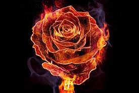A veces pienso en esos tiempos, normalmente llegan recuerdos a mi mente, sin pedirlo, sin esperarlo, sin querer pensar en ello, no se que los llama desde es lugar inmenso que es mi memoria, un olor, un sonido, cierta combinacional de palabras tal vez, no lo se, pero a menudo veo tu imagen en mi mente, quisiera decir que siempre recuerdos felices, pero sabes son tan pocos los momentos felices que compartimos, y sin pensar en la manera tragica en que nos despedimos, quisiera decir que siempre te recorde de una bella manera, pero mentiria, no, no fue asi, que puedo decir de esos tiempos, maldije mil veces tu nombre, repudie tu recuerdo un millon mas, te odie lo juro y aun asi siempre te desee lo mejor, que en ese lugar en el que te encontraras, estubieras bien, que con quien hayas ido, fueras amanda, que si un dia te volvia a encontrar pudiera darte una sonrisa y me contaras mil historias de como tu vida fue maravillosa, sabes a veces pienso en esos tiempos, en esa sonrisa que siempre tenias, en esa mirada, en esos ojos vidriosos que anhelaban un futuro al lado de tu hombre soñado, no, no fui yo, no el destino no nos mantuvo juntos por alguna razon, no el tiempo no pudo separarnos por alguna razon y aqui estas con mil historias nuevas, pero no las que esperaba que contaras y aqui estas con una sonrisa distinta, con una mirada distinta, buscando un recuerdo.
Autor I.V
Nacer

Siempre fue así, fuimos tú, yo y la oscuridad, el continuo marchar de pies cansados por un camino árido, oscuro e interminable, siempre fue así, la continua búsqueda de la luz al final del túnel, el abrazo de la nada absoluta, la caricia de la vejez qué se hace sentir más presente con cada paso que das, el final inminente, el duro golpe de realidad al despertar en las mañanas, siempre fue así, la continua tragedia y la comedia involuntaria, mezclados de manera irónica para darle un toque de sazón a la vida, siempre fue así, melancolía infinita, tristeza, rabia y amargura, siempre la sonrisa apagada, la mirada perdida, el continuo estallido de ira, siempre fue así, hasta ese día, ese día lo cambió todo, un abrazo, un beso y una caricia, ese día volvía a nacer.
Autor I.V
Futuro
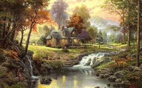No conozco el futuro, no se si me amaras para siempre, no se si yo lo haré, no sé si nuestros sueños se cumpliran, si algun dia vere ese gran final que que esperamos, no conozco el futuro no se si viviré lo suficiente para verte cumplir tus promesas, o para cumplir las mías, no, no conozco el futuro, y aun así quiero creer que algun dia pasara, que tal vez el universo nos debe una especie de retribución por toda la tristeza que hemos tenido que vivir, no conozco el futuro, pero eso no me evita soñar, con verdes jardines y árboles de jacarandas floreciendo, con una pequeña casa en la cima de una colina rodeada de árboles morados, quisiera verte ahí y envejecer contigo, morir a tu lado, no conozco el futuro pero me gusta pensar que pasara, me gusta pensar que esto será eterno, que el tiempo no nos separara, que la vida no volverá a separar nuestros caminos, no, no conozco el futuro, quisiera conocerlo, y saber si ese sueño se cumplira.
Autor I.V
Fuego
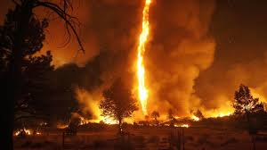Mi alma se quema, llevo el sol en el pecho, las llamas del infierno danzan con el latido de mi corazón, ven cariño bailemos entre las cenizas, ven amor mío mira las llamas bailar a nuestro alrededor, mira como el fuego nos consume lentamente, mira amor soy fuego, soy luz, soy la inmensidad del universo, lo soy todo a tu lado y nada sin ti, mira amor mío en lo que me has convertido, mira lo que provocas en mí, ese amor que quema, que lo consume todo dentro de mi, baila conmigo hasta que tus piernas no puedan más, hasta que mi corazón deje de latir, que las llamas nos consuman y por fin seamos uno con el fuego, uno con la luz, hasta que por fin seamos el universo , ven amor deja que vuelen nuestras cenizas, recorramos el mundo hasta que nuestra existencia se desvanezca con el viento.
Autor I.V
Y
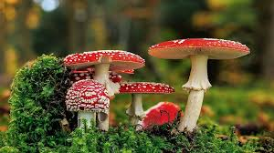¿Me extrañaste? Se que tu primer instinto será decir que si, pasaron tantos años que dejé de pensar en ti, paso tanto tiempo que al verte casi no te reconoci, cuando supe de ti mi mente se llenó de preguntas, ¿Por qué hoy? ¿Por qué aquí? ¿Por qué en este momento de mi vida? Preguntas sin una verdadera respuesta, más que las suposiciones de que algo más grande en el universo, quería unir nuestros caminos una vez más, pasamos un tiempo juntos, y otras preguntas surgieron, yo me fui y olvide ese lugar donde te conocí, tú también lo hiciste, pero te veias obligada a regresar ahí, siempre me pregunté si ese lugar te traía recuerdos de mi, si volteabas a ver ese árbol y recordabas los días que pasamos bajo sus hojas, las mil tonterías que dije ahi, los abrazos, los besos, las cosas simples, los días que pasaron, borraron mi voz gritando tu nombre detrás de esa puerta, el lugar cambio, yo me desvanecí con el tiempo y tu recuerdo se fue apagando en mi memoria, tal vez una mueca de sonrisa cuando me acordaba de esos tiempos, jamas pense volver a verte, no después de dejar de buscarte, solo pedí al universo que estuvieras bien, que ahí donde hayas ido encontrarás lo que buscabas, que esa persona que escogiste para acompañarte en tu camino realmente fuera mejor que yo, que realmente te amara, viviste tu vida y yo la mia, ¿Fuiste feliz? ¿Fuiste amada? ¿Obtuviste lo que querías? Y lo más importante ¿que te trajo de vuelta?
Autor I.V
Hola
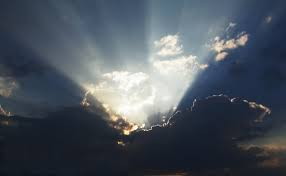Recuerdo esos dias, en mar de epinas que llenaba mi mente, los aullidos de la desesperacion, las voces oh como recuerdo las voces, nunca se cayan, jamas habia silencio, jamas habia descanso, recuerdo la marea de desesperacion, la sensacion continua de que la muerte te acecha, los dias sin sentido, uno igual que el otro, es de dia, es de noche, todo igual, gris, frio, apagado, como vivir en una vieja pelicula en blanco y negro, es tan curioso como un “hola” puede cambiar un mundo, puede pintar la vida de colores, una palabra tan simple, como un rayo del sol colandose entre las nubes y entonces revive la magia, la poesia, le da otro tono a la musica, le pone colores a la vida, como una palabra tan simple, desata un mar de emosiones, trae una ola de felicidad a la vida y tal vez algun dia todo eso se valla, tal vez un dia se termine, pero hoy, hoy da vida, provoca una sonrisa, hace que el alma cante y que las letras se apilen por montones, que el hoy sea feliz y que el mañana de esperanza.
Autor I.V
Ya no te amo
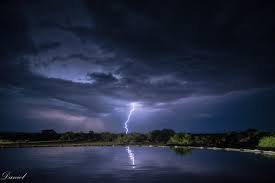Hay un par de palabras que no deseo que nadie deba escuchar, tinen la capacidad de helar la sangre, de detener el tiempo por un segundo, de romper tu mundo, de hacer que algo que creias perfecto se vuelva un infierno, palbras que he tenido que escuchar unas cuantas veces en mi vida, siempre la misma mierda disfrazada de diferente mnera, siempre la misma mala cancion disfrazada de diferente tono, cuentame a mi de que me sirve que digas que lo haces pensando en mi, que es por mi bien, que no soy yo, que eres tu, siempre el mismo monton de basura, para tratar de hacerme creer que es lo mejor para mi, cuando solo estas pensando en ti, ser egoista y repugnate, ten por lo menos el valor de decir que es por que quieres aires nuevos, nuevas experiencias, que mereces a alguien mejor, no se cualquier cosa seria mas honesta, que ese discurso mal logrado acerca de que siempre me vas a recordar, que a pesar que pase el tiempo siempre sere el amor de tu vida, no vengaas a mi con escusas de que no te entiendo, que no se lo dificil que es para ti, que con el tiempo el amor se acabo, que ya no soy el mismo, que ahora sueñas con otras cosas, no te preocupes cariño ya lo habia escuchado antes, es solo que no esperaba escucharlo de ti, no aun.
Autor I.V
Soledad
Siempre tuve cierta renuencia a enamorarme otra vez, yo sabía que ya no podría confiar en nadie mas, no quería experimentar una vez más el estar con alguien y aun así sentirme solo, no quería ser segunda opción de nadie nunca mas, no quería mirar a alguien a los ojos una vez mas, decirle te amo y no sentir nada, no quería esperar mensajes que nunca llegaran, señas de afecto vacías, no quería escuchar que me aman y sentir que es mentira, no quería refugiarme en letras de canciones, en viejos poemas, no quería desempolvar mi pluma una vez mas, no quería estar aquí sentado en la oscuridad esperando una señal de amor, no quería sentirme como un muñeco que espera en una repisa ser tomado, admirado y amado cuando es conveniente, cuando se acuerdan de el, no estaba buscando nada mas que caminar a la deriva con mi soledad, no esperaba que a esta altura de mi vida alguien tomará mi mano, besara mis labios y me dijera te amo, no solo no lo esperaba, no lo quería, ya he jugado este juego mas veces de las que quisiera recordar, amar, reír, escribir bellos recuerdos en la memoria y luego de vuelta a la oscuridad, de vuelta al vacío, a convivir con la soledad una vez mas.
Autor I.V